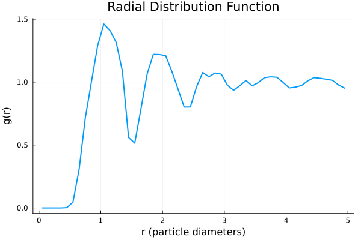

Analysis of Simulation Results
Simple analyses tasks can be performed using the SimulationAnalysis package. See the documentation for more details.
To install, use the Julia package manager:
using Pkg
Pkg.add("https://github.com/IlianPihlajamaa/SimulationAnalysis.jl")We can load the result of a SPV simulation using the read_SPV_simulation function from the SelfPropelledVoronoi package. This function reads the HDF5 file. We can then compute for example the radial distribution function (RDF) of the Voronoi cells using the find_radial_distribution_function function from the SimulationAnalysis package.
Let's do a simple simulation, and save the results to an HDF5 file:
import Pkg; Pkg.activate(".")
using SelfPropelledVoronoi, StaticArrays, Random
using Statistics
N = 400
rho = 1.0
L = sqrt(N/rho)
Lx = L
Ly = L
dt = 0.1
pbc_layer_depth = 2.5
# Create a box
box = SimulationBox(Lx, Ly)
# Create a VoronoiCells object
target_perimeters = 3.85*ones(N)
target_areas = ones(N)
K_P = ones(N)
K_A = ones(N)
active_force_strengths = ones(N)*0.01
D_r = ones(N)
voronoi_cells = VoronoiCells(
target_perimeters,
target_areas,
K_P,
K_A,
active_force_strengths,
D_r
)
# Create a ParameterStruct object
kBT = 1.0
frictionconstant = 1.0
random_seed = 564574564
Random.seed!(random_seed)
dump_info = DumpInfo(
save=false,
filename="mydata.h5",
when_to_save_array=0:1000:1000000,
)
rng = Random.MersenneTwister(random_seed)
verbose=true
cb(x...) = nothing
parameter_struct = ParameterStruct(N = N, dt = dt,
kBT = kBT, frictionconstant = frictionconstant,
periodic_boundary_layer_depth = pbc_layer_depth, verbose = verbose, box = box, particles= voronoi_cells,
dump_info = dump_info, callback = cb, RNG = rng)
# Create an ArrayStruct object
arrays = ArrayStruct(N)
arrays.positions .= [rand(SVector{2, Float64}) .* box.box_sizes for _ in 1:N]
arrays.orientations .= 2π*rand(Float64, N)
# Create an Output object
output = Output()
arrays.neighborlist.check_tesselation = true
# Run the simulation
Nsteps = 1000 ÷ dt
run_simulation!(parameter_struct, arrays, output, Nsteps)
dump_info.save = true
Nsteps = 10000 ÷ dt
run_simulation!(parameter_struct, arrays, output, Nsteps)
Now we can use this data to compute the RDF:
using SelfPropelledVoronoi
using SimulationAnalysis
# Load the simulation results
traj, params = SelfPropelledVoronoi.load_trajectory("mydata.h5")
sim = read_SPV_simulation(traj, params)
# Set parameters for g(r) calculation
Nbins = 100
rmax = 5.0
# Calculate the radial distribution function
bin_centres, g_r = SimulationAnalysis.find_radial_distribution_function(sim, Nbins, rmax)
# Plot the g(r)
plot(bin_centres, g_r,
xlabel="r (particle diameters)",
ylabel="g(r)",
title="Radial Distribution Function",
legend=false,
lw=2
)